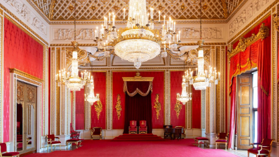
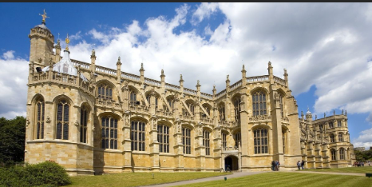
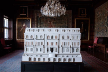
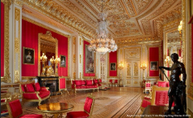
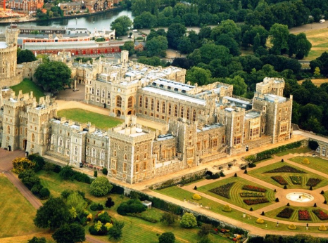
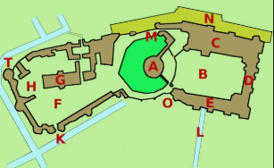
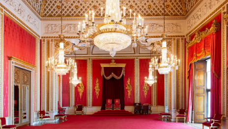
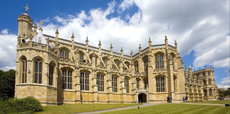
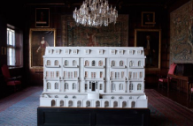
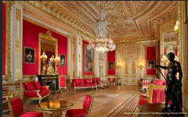

Windsor Castle for junior classes





Windsor Castle is the residence of the monarchs of Foggy Albion. It is located in Berkshire County. In terms of its historical significance, it surpasses Buckingham Palace, as it was this castle that gave its name to the royal dynasty of England
It consists of: "Round Tower" Upper courtyard or Quadrangle
State Chambers
The Monarch's private chambers
The South Wing
The lower courtyard
St. George's Chapel
Horseshoe Cloister
The long trail
The gate of King Henry VIII (the main entrance to the castle)
Norman Gate
North terrace
The Edward III Tower
The Watchtower
Interior
The State Apartments are used for official ceremonies and receptions. The halls feature works of art from the Royal Collection, including works by Rembrandt and Van Dyck.
St. George's Chapel is an example of Gothic architecture, a place of royal weddings, and the burial site of many British monarchs.
Queen Mary's Dollhouse is a miniature masterpiece created in the early 1920s. It replicates the setting and contains objects, many of which are replicas of items in Windsor Castle.
The private apartments are located on the second floor of the castle, in one of its newest parts, built in the 19th century.
Windsor Castle for senior classes






A. "Round Tower" (Round Tower)
B. Upper Court or Quadrangle
C. State Chambers
D. Private Chambers of the Monarch
E. Southern Wing
F. Lower Court
G. St. George's Chapel
H. Horseshoe Cloister
L. Long Path
K. King Henry VIII Gate (main entrance to the castle)
M. Norman Gate
N. Northern Terrace
O. Edward III Tower
T. Watch Tower
Windsor Castle covers an area of 52,609 square meters and combines the features of a fortress, a palace, and a small town. Throughout its history, it has been rebuilt several times, and its current appearance was achieved through reconstruction after the 1992 fire. The largest room in the castle is St. George's Hall, which measures 55 meters in length and 9 meters in width.
The castle is surrounded by extensive parks. In the 19th century, the so-called Home Park was established to the east of the castle, which also includes two working farms and cottages. A long trail, 75 meters wide and 4.26 kilometers long, runs south from the castle, with trees planted on both sides (elms were planted in the 17th century, and they were replaced with chestnut and plane trees after 1945).
Interior
The State Apartments are used for official ceremonies and receptions. The halls feature works of art from the Royal Collection, including paintings by Rembrandt and Van Dyck
St. George's Chapel is an example of Gothic architecture, a place of royal weddings, and the burial site of many British monarchs.
The Queen Mary's Dollhouse is a miniature masterpiece created in the early 1920s. It replicates the setting and contains objects, many of which are replicas of items in Windsor Castle.
The private apartments are located on the second floor of the castle, in one of its newest parts, built in the 19th century.